三款竞品都用一个活动中心装全部活动，按玩家怎么参与分页签；两个版本的原型照下面十点画
金好运、星城、豪神娱乐城的活动入口与活动中心，每点配截图，写清竞品怎么做、为什么好、我方现状、画原型怎么用。
三款一致
一个窗口装全部活动
左侧列表、右侧大图加按钮、右上关闭；列表项带角标和红点；付费活动也留在这个窗口里，没有挪进商城。
三款不同
页签按什么分
只有豪神把付费活动单列一个页签；星城、金好运的页签只分内容类别（活动／推荐／公告／中奖记录）。
对两个版本的用法（建议）
合并版分免费／付费页，不合并版限时活动窗口只分内容
合并版照豪神画「免费活动｜付费活动」页签；不合并版限时活动窗口沿用「游戏活动｜平台活动」，付费放商城。页签名暂定。
两个版本按任务口径理解：合并版＝好康活动与限时活动合成一个活动窗口（含付费页）；不合并版＝两个入口仍分开，付费活动放商城。如定义不同，设计点 2、8、9 的「怎么用」要改。口径：竞品内容都是 2026-10-09 单账号（新号）录屏所见，未见不等于没有；标「推断」的不是画面原文。出处写法：常规档案_竞品名＋录屏时间戳，档案在「竞品跟踪分析/过程/」。截图上的红框是本页标注，点图放大。
- 1窗口版式三款一致
- 2只有豪神单列付费页签
- 3列表项：角标＋名称＋红点
- 4右侧三种内容形态
- 5第一项放当期主推
- 6自动打开与「今日不再显示」
- 7同一活动多处露出
- 8公告、中奖记录进活动窗口
- 9付费活动放哪
- 10商城页签（只作对照）
我方现状对照图（下文「我方现状」都指这四张，点图放大）


设计点 1活动窗口三款版式相同：左侧列表、右侧大图加按钮、右上关闭；只有页签位置和标题不同


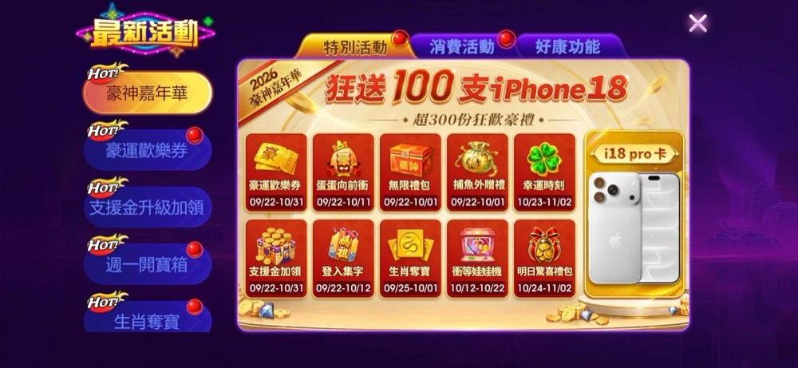
- 金好运无标题字；页签是最左竖排 3 个无文字图标；大图下「查看詳情」，多数项另有「立即前往」；右上 X。常规档案_金好运 t0006.0、t0017.0
- 星城左上标题「活動快訊」；页签是最左竖排 3 个「图标＋文字」；大图下「點擊前往」；右上「今日不再顯示」和 X。常规档案_星城 t0003.5
- 豪神左上标题「最新活動」；页签是顶部横排 3 个文字页签；右上 X；嘉年華总览页没有主按钮；10 个格子能否点击、点进去什么，录屏未见。常规档案_豪神 t0024.5
设计点 2只有豪神把「付费活动」单独分了页签；星城、金好运的页签只分内容类别，付费活动混在免费活动里
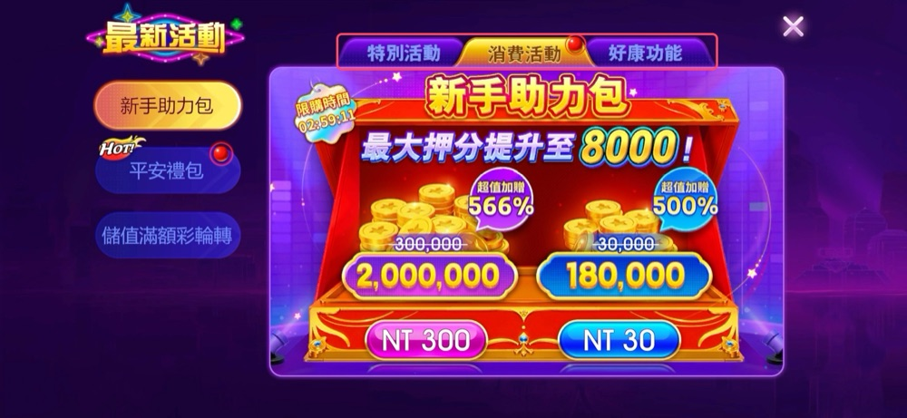
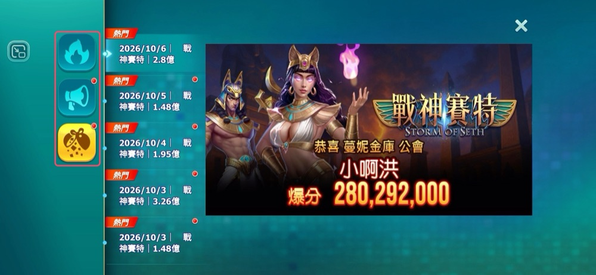
- 豪神特別活動 10 项（每项带 HOT!）／消費活動 3 项（新手助力包、平安禮包、儲值滿額彩輪轉）／好康功能 5 项（綁定有禮、綁定手機號碼送豪幣、天天幸運球、豪神刮刮樂、好康資訊）。常规档案_豪神 t0024.5、t0039.5、t0043.0
- 星城活動 5 项／推薦 10 项（含 4 项储值渠道活动）／公告 6 条。常规档案_星城 t0003.5、t0008.0、t0031.5
- 金好运火焰＝活动 15 项（含 4 项储值渠道活动，与排行、签到混排）／喇叭＝公告／福袋＝中奖记录 5 条。常规档案_金好运 t0006.0、t0017.0、t0035.0
设计点 3列表项三款都是「角标＋名称＋红点」，看过红点消失；日期不写在列表项里
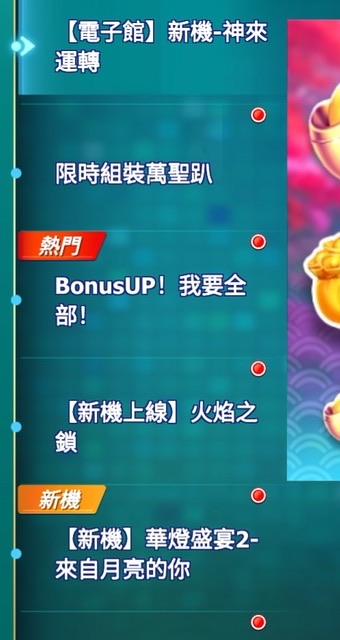
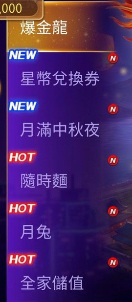
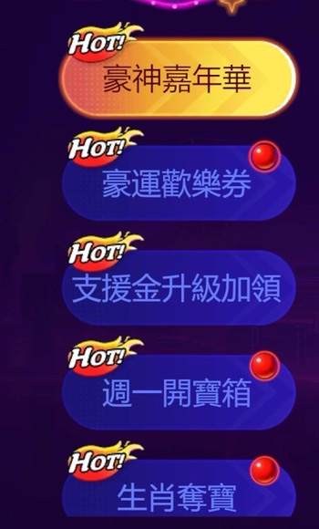
- 金好运左上角标「熱門」「新機」，名称最多两行，右侧红色圆点；列表项里没有日期。常规档案_金好运 t0006.0、t0042.0
- 星城左上「NEW」「HOT」，右侧红色「N」；推薦页 NEW 3 项、HOT 4 项，其余无标签；列表项里没有日期。常规档案_星城 t0008.0–t0030.5
- 豪神特別活動 10 项每项带「HOT!」；消費活動只有「平安禮包」带，好康功能 5 项都没有；日期写在右侧总览格里。常规档案_豪神 t0024.5–t0047.5
- 三款所见，看过的列表项红点或「N」会消失。金好运 t0115.5；星城 t0027.5→t0029.0；豪神 t0028.0、t0036.0、t0040.5
设计点 4右侧内容区有三种形态：大图加按钮、活动总览格、直接放活动页
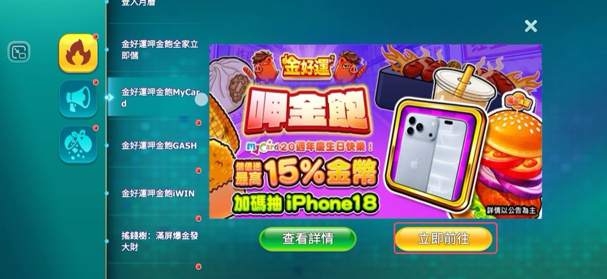
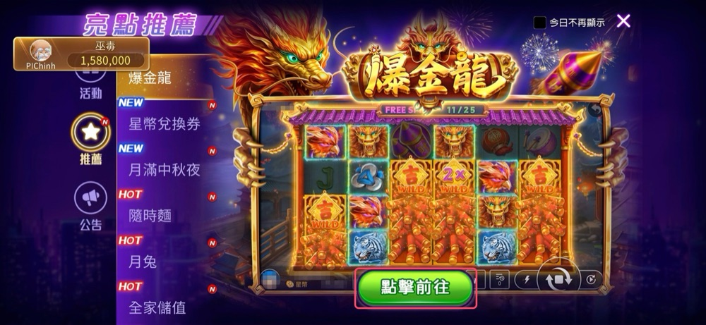
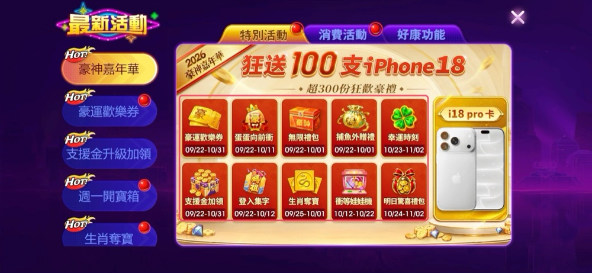
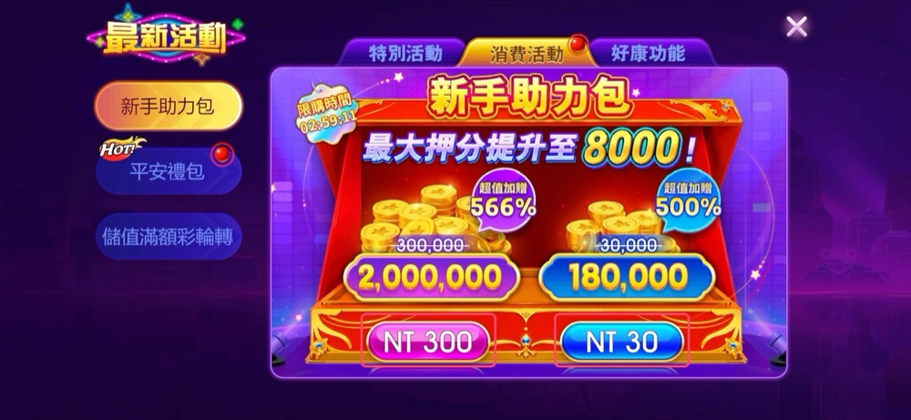
- ① 大图＋按钮：金好运两个按钮、星城一个。常规档案_金好运 t0017.0；常规档案_星城 t0008.0
- ② 活动总览：豪神「豪神嘉年華」一张横幅里放 10 个子活动格，每格有名称和起止日期。常规档案_豪神 t0024.5
- ③ 直接放活动页：豪神「新手助力包」页和单独弹窗是同一页，「綁定有禮」同理。窗内能否玩完整玩法，录屏未见。常规档案_豪神 t0039.5、t0022.0、t0043.0、t0009.5
设计点 5每个页签的第一项放当期最要推的，并默认选中
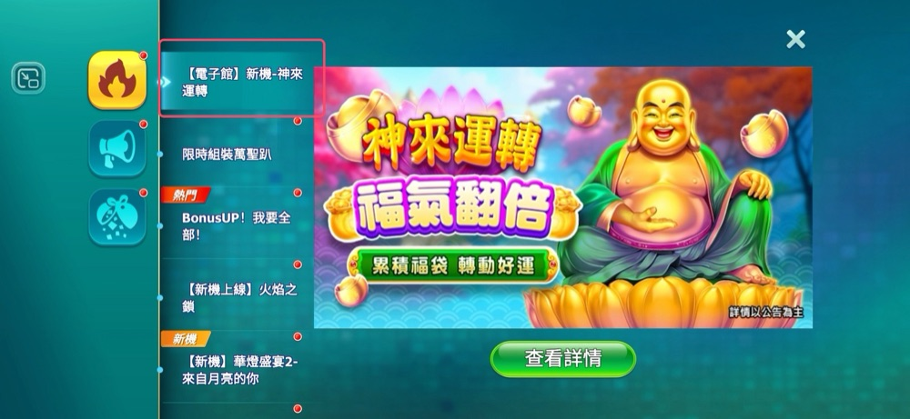
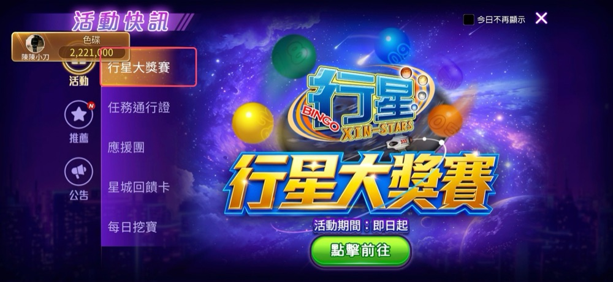
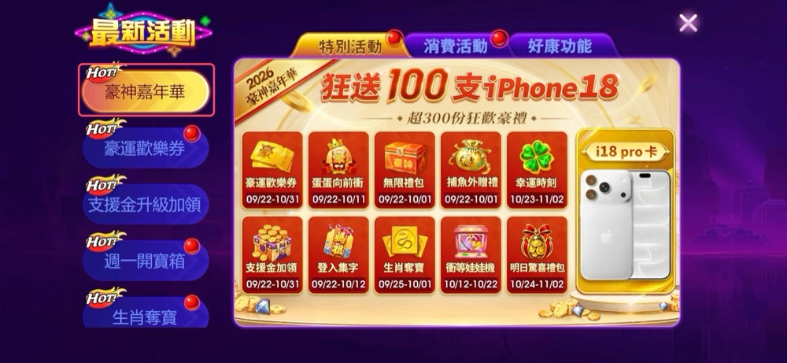
- 金好运第一项是新机宣传「【電子館】新機-神來運轉」，打开即选中。常规档案_金好运 t0006.0
- 星城第一项是排名赛「行星大獎賽」（每日前 100 名有奖），打开即选中。常规档案_星城 t0003.5
- 豪神特別活動第一项是活动总览「豪神嘉年華」；点开「消費活動」默认显示第一项「新手助力包」，点开「好康功能」默认显示「綁定有禮」。常规档案_豪神 t0024.5、t0039.5、t0043.0
设计点 6星城的活动窗口自动打开，右上带「今日不再显示」；金好运、豪神录屏里未见这个勾选框
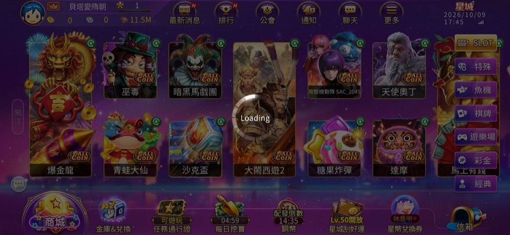
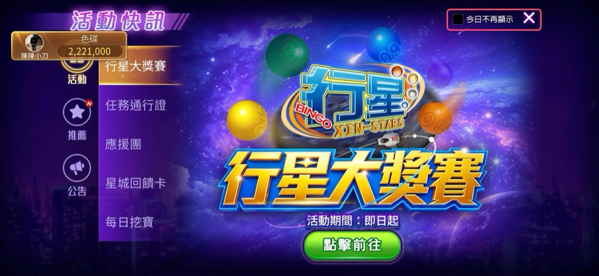
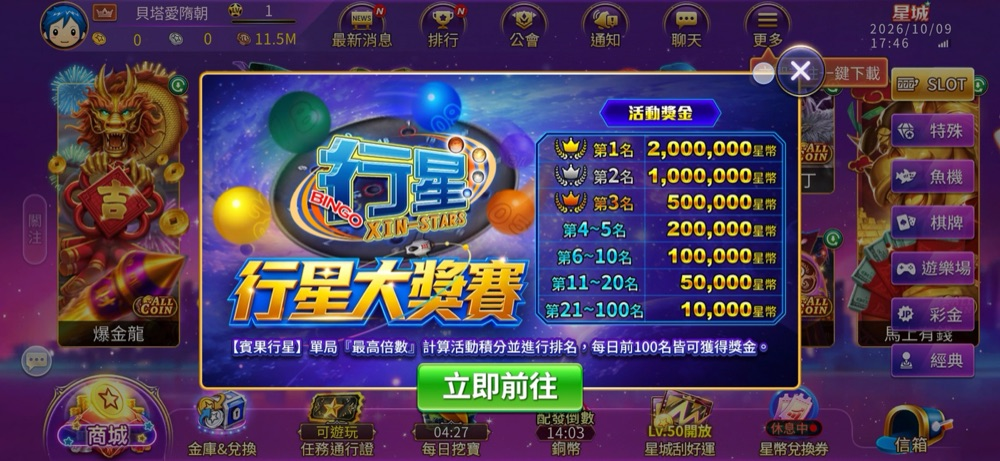
- 星城活动窗口在录屏中自动出现（推断依据：淡入前没看到点击）；右上「今日不再顯示」勾选框在活动、推荐、公告三个页签都有，录屏全程没勾；关窗后再弹「行星大獎賽」单项弹窗，弹窗上未见勾选框。常规档案_星城 t0002.0、t0003.5、t0031.5、t0034.5
- 金好运豪神活动窗口也是关掉上一个窗口后出现（推断自动打开）；窗口里未见「今日不再顯示」。常规档案_金好运 t0006.0；常规档案_豪神 t0024.5
设计点 7同一个活动在活动中心有一行，在大厅还有常驻入口，带剩余天数或倒计时；豪神最完整
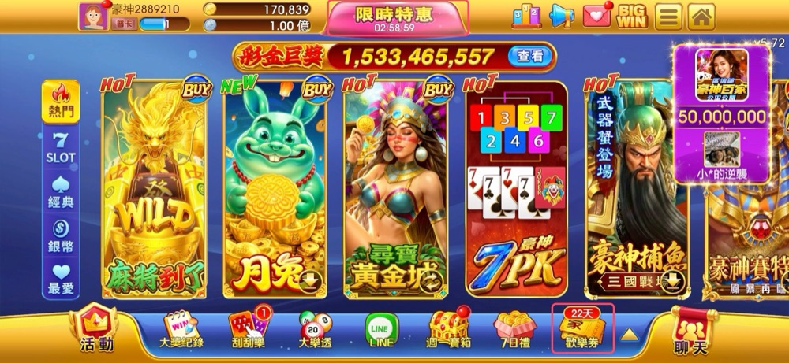
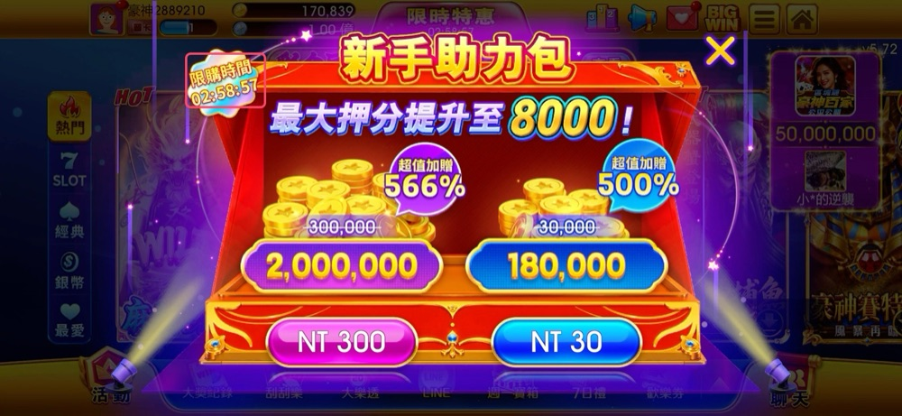
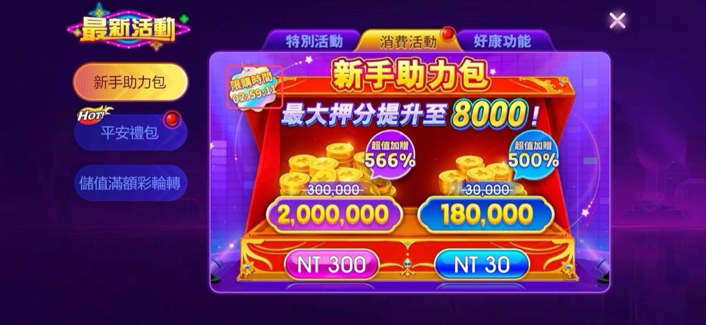
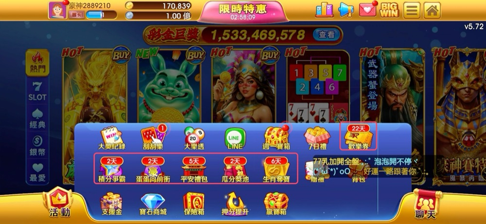
- 豪神「新手助力包」：顶栏「限時特惠」常驻 → 点开是弹窗 → 同一页也在「最新活動」消費活動第 1 项；两处「限購時間」倒数同步。常规档案_豪神 t0051.0、t0053.5、t0039.5
- 豪神「豪運歡樂券」：活动中心特別活動第 2 项＋底栏「歡樂券」上标「22天」（活动期 9/22–10/31，推断角标是剩余天数）；底栏展开后另有 5 个活动图标各带天数角标。常规档案_豪神 t0028.0、t0051.0、t0101.5
- 星城「行星大獎賽」：活动页第 1 项＋关窗后单独弹窗。常规档案_星城 t0003.5、t0034.5
- 金好运「登入月曆」：火焰页第 9 项＋底栏入口＋录屏开始时单独开着；底栏图标上未见天数角标。常规档案_金好运 t0002.0、t0042.0
设计点 8金好运、星城把公告放进活动窗口当一个页签；中奖记录只有金好运放进去
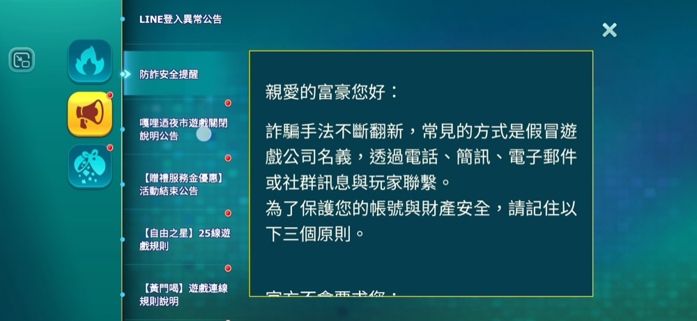
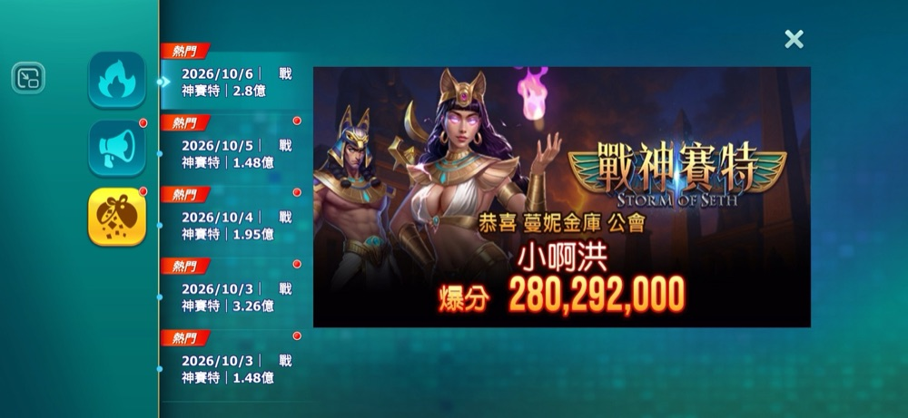
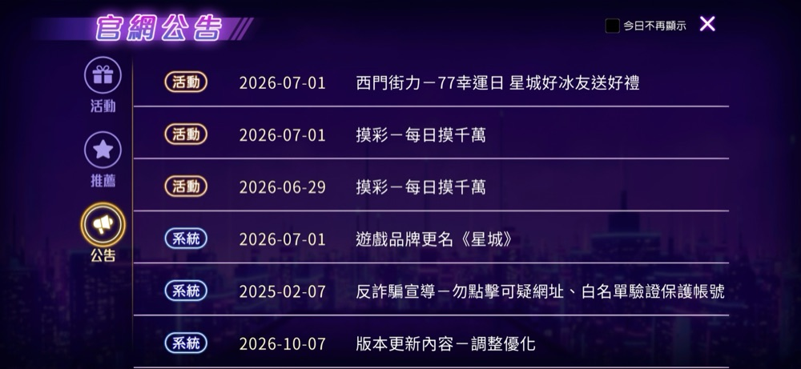
- 金好运活动窗口第二个页签（喇叭）是公告，列表项带红点，右侧是正文；第三个页签（福袋）是中奖记录 5 条，右侧是大图，图下没有按钮。常规档案_金好运 t0028.5、t0035.0
- 星城活动窗口第三个页签是公告，标题「官網公告」；6 条，3 条标「活動」、3 条标「系統」；中奖记录页签未见。常规档案_星城 t0031.5
- 豪神活动窗口只有 3 个页签，没有公告页签；顶栏信封、喇叭图标没点开，公告放哪录屏未见。常规档案_豪神 t0004.0、t0024.5
设计点 9付费活动三款都留在活动窗口里：豪神单列「消費活動」页并带价格按钮，星城给「前往商城」按钮

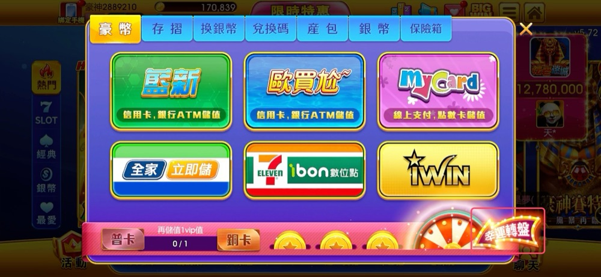
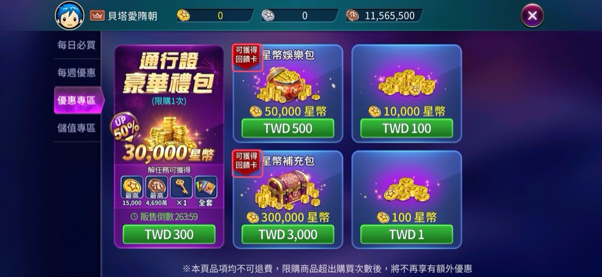
- 豪神「消費活動」3 项：新手助力包（页内带 NT 300／NT 30 价格按钮）、平安禮包、儲值滿額彩輪轉（储值 4 次送 1 次转盘）；转盘在商城底部也有入口（推断同一个转盘）。常规档案_豪神 t0039.5、t0042.0、t0056.0
- 星城「星城回饋卡」在活动窗口「活動」页第 4 项，按钮「前往商城！」；商城里指定礼包有「可獲得回饋卡」角标。按钮点进去的落点录屏未见。常规档案_星城 t0005.5、t0058.0
- 金好运4 项储值渠道活动（全家、MyCard、GASH、iWIN，送最高 15% 金币）与排行、签到混排在活动窗口火焰页；礼包在商城「限購禮包」。常规档案_金好运 t0016.0–t0018.0、t0100.0
设计点 10商城页签三款各不相同：星城按购买节奏分，豪神把储值、存摺、兑换放进一个窗口，金好运只有 2 页（只作对照）
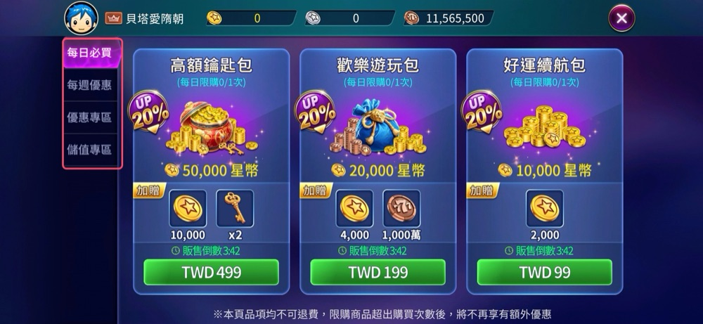
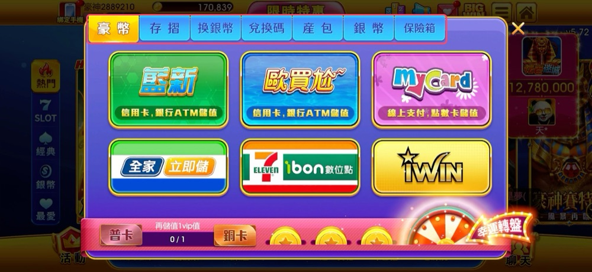
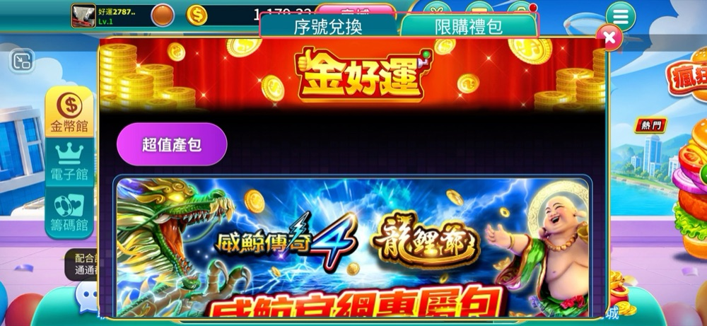
- 星城前三页是礼包（每日、每週、专区，带「UP 20%」角标、限购次数、销售倒数），第四页是 4 个储值渠道卡。常规档案_星城 t0053.0–t0059.5
- 豪神首页是 6 个储值渠道，底部是卡别进度条＋「幸運轉盤」；存摺、换银币、兑换码、产包、银币、保险箱在同一窗口的其他页签。常规档案_豪神 t0056.0–t0072.5
- 金好运礼包页带「超值產包」子分类；商城约 53 秒才加载出内容，「序號兌換」始终没加载。常规档案_金好运 t0046.0、t0098.5、t0100.0
边界录屏里没拍到的，画原型时别当作竞品没有
- 三款所有「前往」「查看詳情」点进去后的页面；豪神嘉年華 10 个子活动里 6 项只见名称，内容未见。
- 豪神：公告入口和分类（顶栏信封、喇叭没点）；「特別活動」第 10 项以下。
- 金好运、豪神：活动窗口里的「今日不再顯示」；金好运、星城：大厅图标上的活动剩余天数角标（只见玩法倒计时）。
- 星城：中奖记录页签；公告「其他」类；活动窗口关闭后再次打开它的入口。
- 三个账号都是新号，老玩家、付费玩家看到的可能不同。
截图来源：竞品跟踪分析/素材 下的报告图、关键帧、每秒帧；本页用到的 34 张已复制到「竞品参考图/」，文件名为「竞品_设计点_竞品名_时间戳」。红框为本页标注，原帧未改动。